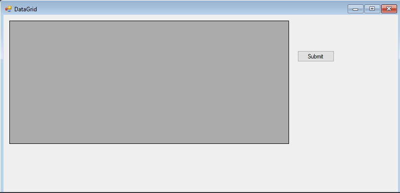
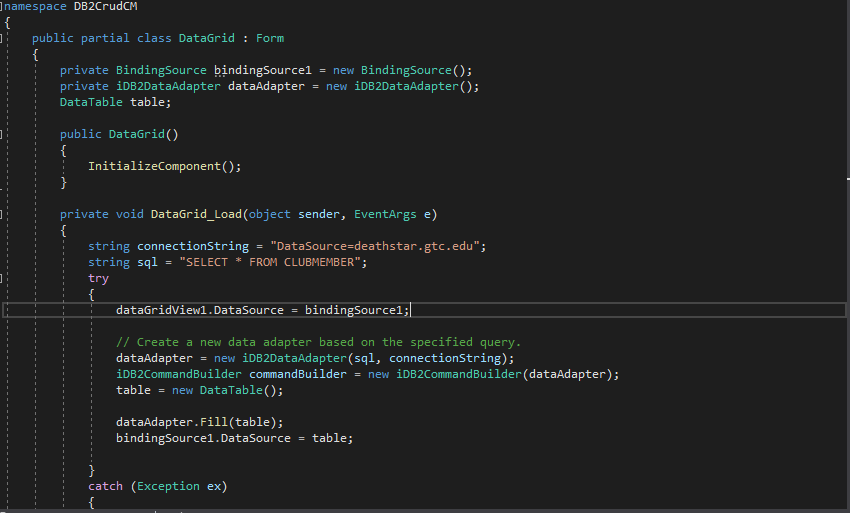
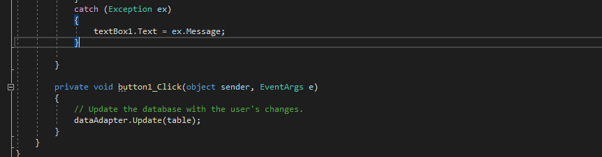
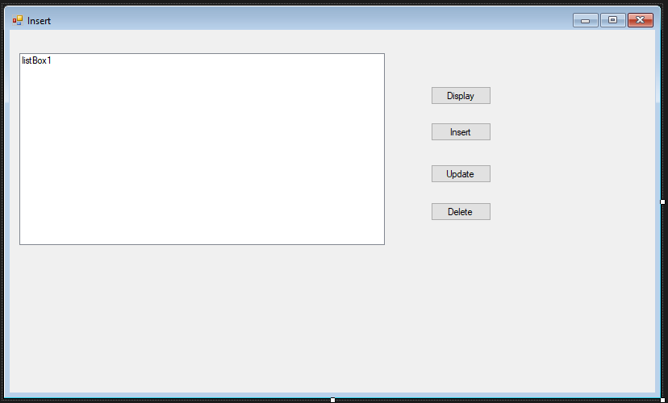
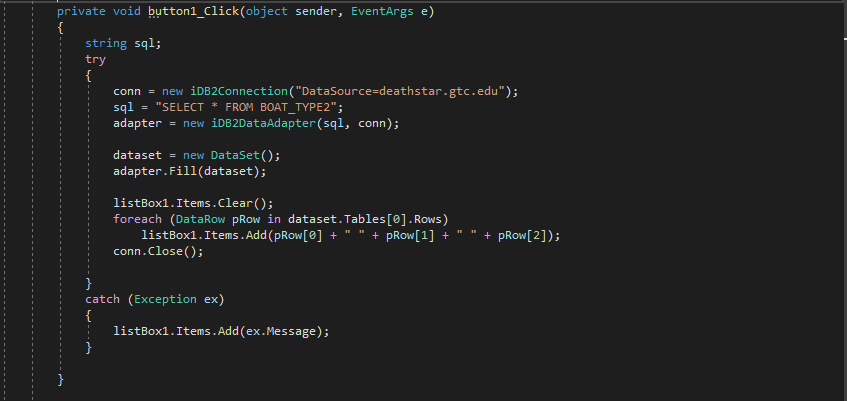
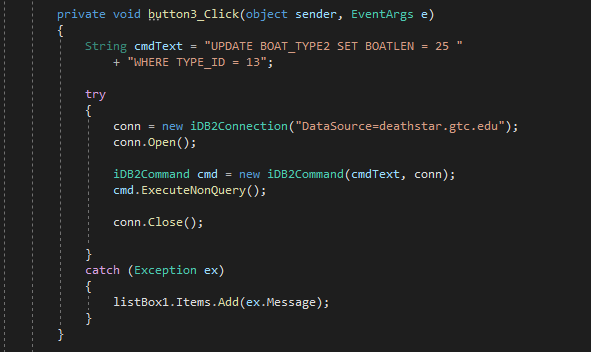

This concludes the C# terminology table. Moving forward we have documentation on my DB2Crud
project I created on a cloudserver using the deathstar.gtc.edu database provided by my college.
This program does not show a end result as I do not have access to the database anymore.

This image presents what I like to call the datagrid. The datagrid is used to carry out all
CRUD operations. These include Create, Read, Update, and Delete for a database.

This is the code behind the datagrid. Within the first line of code you will notice a binding
source. The binding source is used to establish a connection to a database. The database in this
example is named deathstar.gtc.edu. The reason this works is because the database establishes a
connection to the deathstar database within the cloudserver. Moving on we have the data adapter.
The data adapter is used to specify what you are doing inside of the database. So in other words
the data adapter is a tool used to specify what SQL command is being carried out. The next 2 strings
are used to make the code look neater. The strings hold the datasource and the sql needed to access
the club member table from inside the deathstar. The data adapter needs to access the table which
is why the 2 strings come in. The command builder is needed to make commands function properly
from inside the program. It is the reason the sql string functions properly. Next you see a table.
This table is used to fill in the data adapter on what the sql string is trying to do.
Plus it is used to provide the instance of data to the binding source.

These last 2 areas of code serve to update the table after a Crud operation is carried out.
Also to catch any errors you may encounter in the coding process. Errors display in the textbox.
Moving forward next we have 3 different CRUD operations.

What we have hear is a form dedicated to 3 of cruds operations. Each button you push
in this program will carry out the operation it is labeled as. whether it be create read update or delete.
Just to not get confused read is display. This application will do all of them. Moving on from the form there
is the code that carry's out these tasks behind it.

Button 1 as the code defines it is the read button. the first line of code is the SQL string this is used
to carry out the read operation via SQL commands. The next line of code is conn short for connection. Conn is
self explanatory. Basically it just establishes connection with the datagrid I explained before. Once connection
is established the code conveys a sql command. You can't convey this earlier otherwise it will break the program.
This is why it is important to understand scope. Scope determines the range of accessibility. Because the SQL is
inside the button click event. Interference will never happen on account of command alteration. Back to the SQL
command this command in particular will display all the information in the table. Here the table is BOAT_TYPE2.
The select statement as well as the * means select all. So it is selecting all the information in the table.
Next the adapter basically establishes the connection and the command to convey it to the compiler. Then the
adapter fills itself with information via the dataset. Lastly the dataset prints itself out inside the listbox.
The listbox first clears itself before that happens to keep things neat and organized. This concludes the read
operation.
Button 2 as the code defines it is the create button. Starting out the lines of code we have the cmdtext.
The cmdtext is used to convey the values that are being altered inside the database. Here in this event we
are adding values to ID Length and description parameters. The @type is used to find the data type each of
those values uses. Here the ID and length are integers. Lastly description is a string. After creating cmdtext
we make an IDB2 command. the way we do this is by using conn and cmdtext. Next we use the built in method of
derive parameters. This makes it so we can add data into the table's parameters. After this in the next 3
lines is where we input the values into the parameters. This code basically adds in a id description and length
in the table BOAT_TYPE2.

Button 3 as the code defines it is the update button. The update button is used to both edit and save data in the
BOAT_TYPE2 table. Update serves as a confirmation in the sql table as well as a way to make changes. Here in this
button event you can see that we are changing boat length using the where modifier. Where is used to separate all
of the data so that you can target a specific point. Without where we would be changing the length of every single
entry of length recorded in the boat type 2 table. In Basic terms it would make all boats look like they have the
same length when they don't.
Down below here we have Space Defender. This is a game I programmed as part of my game development class that I am
very proud to show with the power of WebGL.
Space Defender